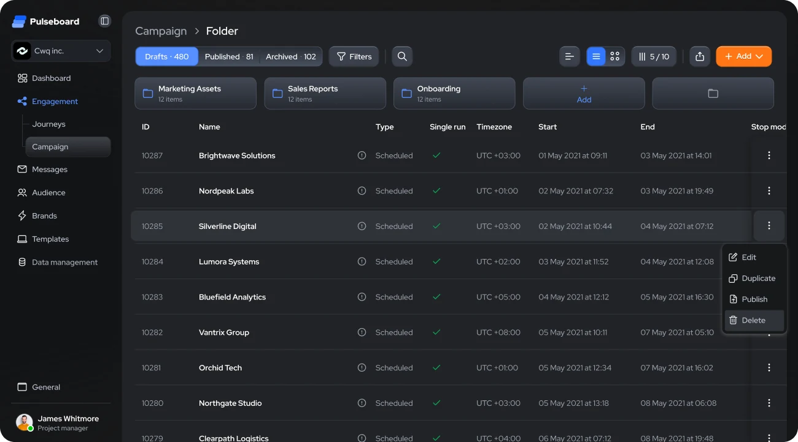
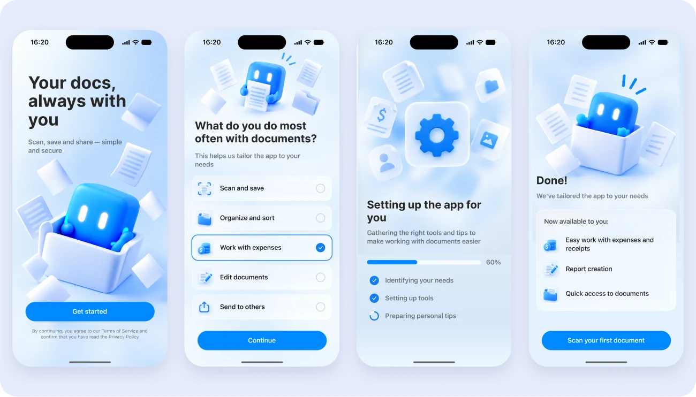
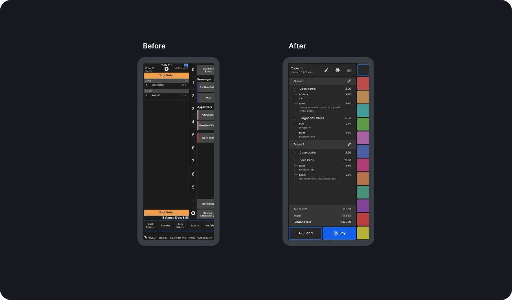
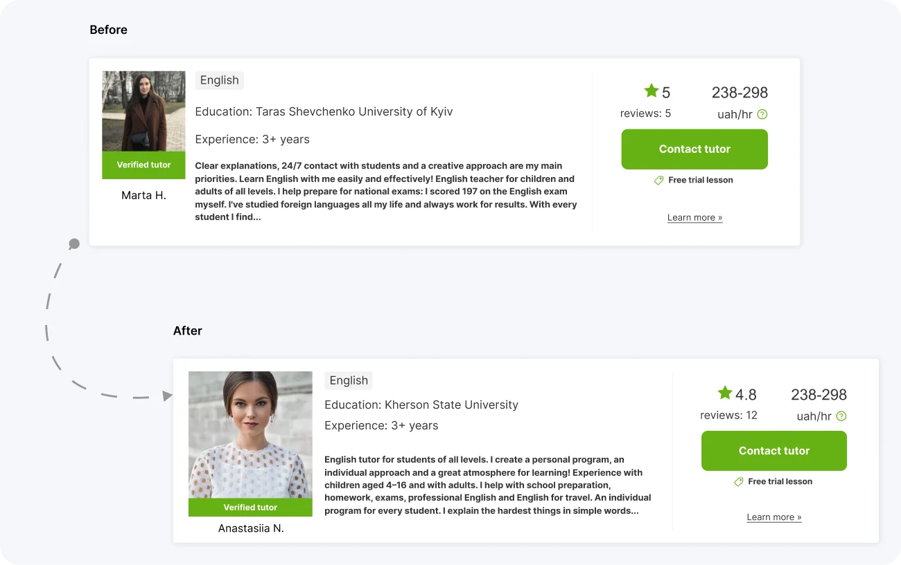

Senior / Lead Product Designer · Valencia, Spain
Hello! I'm Anna 👋
I design products people find easy to use.
I'm a product designer focused on user experiences and design systems for software, web and mobile products. I've led a team of 3 designers, and I apply consumer psychology to keep interaction decisions science-backed.
Selected work
Recent case studies

B2B web platform · Design lead
Pulseboard
Redesigning a multi-brand marketing automation platform so teams can launch and manage hundreds of campaigns across brands.
Read case →
Concept · iOS · Team project
Scanner Pro
Onboarding that starts with the user's task: a first-run experience that leads new users to their first expense report, tested in Maze.
Read case →Earlier work
2023

Restaurant POS · Redesign
SpotOn
Making a restaurant POS faster to learn and readable from dim dining rooms to sunny terraces.
Read case →
Tutoring marketplace · UX improvement
Buki
Helping students find the right tutor with fewer clicks: six changes to the catalog and tutor profile.
Read case →About
How I work
Product designer with 5+ years of experience shaping web and mobile products across fintech, healthcare, real estate, education and e-commerce. I combine end-to-end UX with a background in economics and analytics, so I design with business metrics in mind. Based in Valencia, Spain · open to remote / hybrid.
Structure first
Clear hierarchy, predictable patterns, actions where users expect them
Evidence over opinion
Research and testing shape the decisions
Lead through systems
Planning, design reviews and a shared component system keep a team consistent
Let's talk
Open to Senior Product Designer roles.
© 2026 Anna Zhernoklieieva